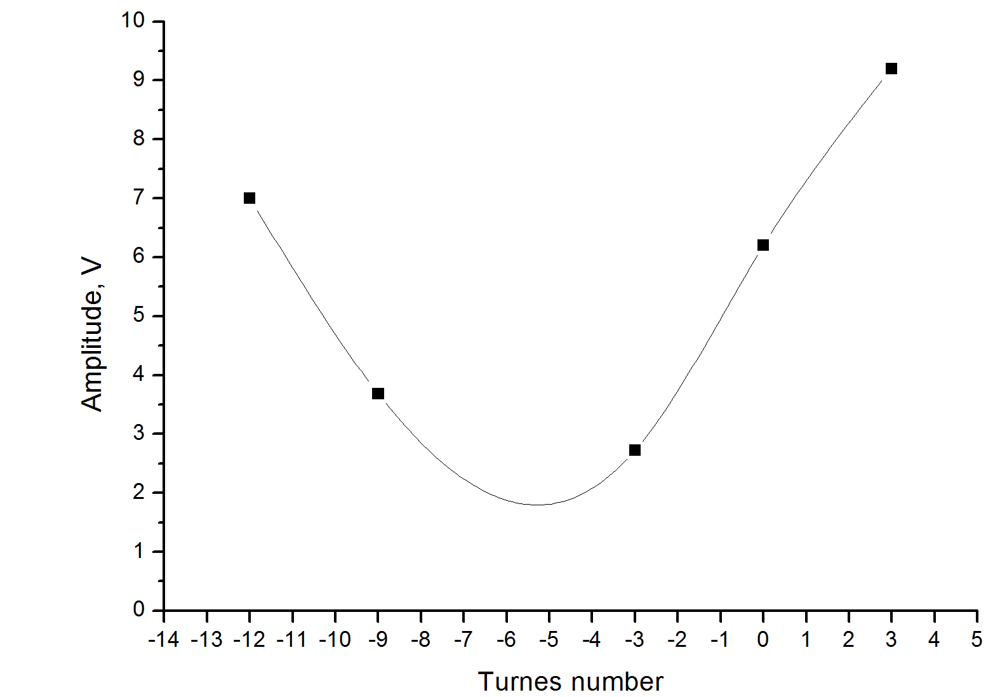
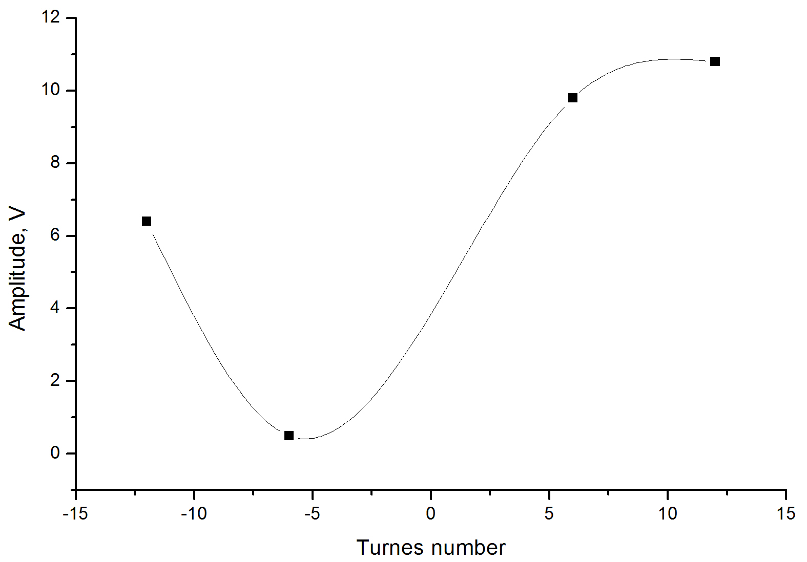

Изначально был намотан неправильно.
17.06.2019 Выявление некоректности количества витков на стенде
настройки:
внешняя емкость - 226 нф;
Частота - 2050 Гц;
Ослабление на генераторе - 40 dB
Дистанция - 1.1 м
при проверке были выявлены лишние 5 витков на боковых катушках

На рисунке четвертая точка соответствует начальному состоянию катушки
19.06.2019 подтверждено наличие лишник 5 витков

по три витка отмотал